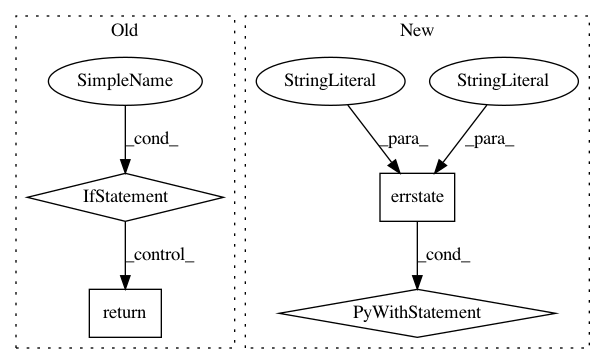

0ab9eb0daf419e000680f162e25220a60c145cf5,scipy/optimize/linesearch.py,,_cubicmin,#Any#Any#Any#Any#Any#Any#Any#,397
Before Change
C = fpa
db = b - a
dc = c - a
if (db == 0) or (dc == 0) or (b == c):
return None
denom = (db * dc) ** 2 * (db - dc)
d1 = np.empty((2, 2))
d1[0, 0] = dc ** 2
d1[0, 1] = -db ** 2
After Change
// f(x) = A *(x-a)^3 + B*(x-a)^2 + C*(x-a) + D
with np.errstate(divide="raise", over="raise", invalid="raise"):
try:
C = fpa
db = b - a
dc = c - a
denom = (db * dc) ** 2 * (db - dc)
d1 = np.empty((2, 2))
d1[0, 0] = dc ** 2
d1[0, 1] = -db ** 2
d1[1, 0] = -dc ** 3
d1[1, 1] = db ** 3
[A, B] = np.dot(d1, np.asarray([fb - fa - C * db,
fc - fa - C * dc]).flatten())
A /= denom
B /= denom
radical = B * B - 3 * A * C
xmin = a + (-B + np.sqrt(radical)) / (3 * A)
except ArithmeticError:
return None
if not np.isfinite(xmin):
return None
return xmin
In pattern: SUPERPATTERN
Frequency: 3
Non-data size: 4
Instances
Project Name: scipy/scipy
Commit Name: 0ab9eb0daf419e000680f162e25220a60c145cf5
Time: 2013-09-13
Author: pav@iki.fi
File Name: scipy/optimize/linesearch.py
Class Name:
Method Name: _cubicmin
Project Name: matplotlib/matplotlib
Commit Name: b218e7c6d97283ccbc6185dbe287302fc280191a
Time: 2019-05-21
Author: efiring@hawaii.edu
File Name: lib/matplotlib/scale.py
Class Name: SymmetricalLogTransform
Method Name: transform_non_affine
Project Name: matplotlib/matplotlib
Commit Name: b218e7c6d97283ccbc6185dbe287302fc280191a
Time: 2019-05-21
Author: efiring@hawaii.edu
File Name: lib/matplotlib/scale.py
Class Name: InvertedSymmetricalLogTransform
Method Name: transform_non_affine